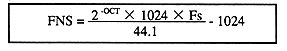
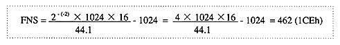

Pitch calculation method
Calculation Formula

OCT value
Sampling frequency | 5.5125KHz → | 11.025KHz → | 22.05KHz→ | 44.1KHz→ | 88.2KHz→ |
OCT value | -3 | -2 | −1 | 0 | 1 |

Therefore, the parameter “P7-P8: Pitch Word” for PCM stream playback is 71CEh.
Notes on using DSP
When using DSP (effect) for PCM stream playback, mixer settings are required. When using DSP, prepare the necessary mixer data and issue the mixer setting command. Even if there is no sequence playback, the tone data for mixer settings is required.
Remarks: One sample is the minimum unit data of PCM waveform data, and its size is the data width. Depends on. It is 1 byte for 8 bits and 2 bytes for 16 bits. But In the case of 4K samples, in the case of 8-bit PCM, it is 4096 bytes and 16 bits. In case of PCM, it is 8192 bytes.